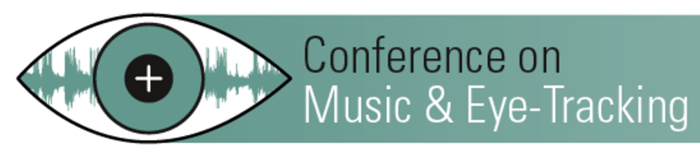
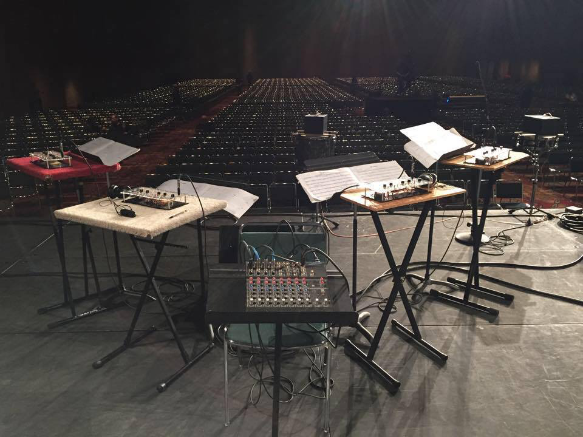

<div class="navbar">
  <div class="navbar-inner">
      <ul class="nav">
          <li><a href="{{ BASE_PATH }}/assets/fink_cv.pdf">CV</a></li>
          <li><a href="https://www.linkedin.com/in/lauren-fink-2ba747109/">LinkedIn</a></li>
          <li><a href="https://github.com/lkfink">Github</a></li>
          <li><a href="http://https://lkfink.github.io/blog">Blog</a></li>
      </ul>
  </div>
</div>

<table class="wide">
<tr>
  <td class="left">
    <a href="pages/publpics/METimage.html">
        
    </a>
  </td>
  <td class="right">
    <a href="pages/publpics/arduino.html">
        
    </a>
  </td>
</tr>
<tr>
  <td class="left">
    <a href="pages/publpics/OscillatorEtudes_PASIC14.html">
        
    </a>
  </td>
  <td class="right">
    <a href="pages/publpics/ScienceMusical.html">
        
    </a>
  </td>
</tr>
</table>